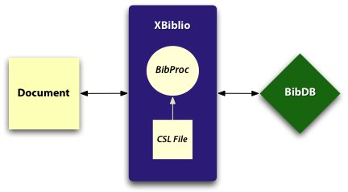
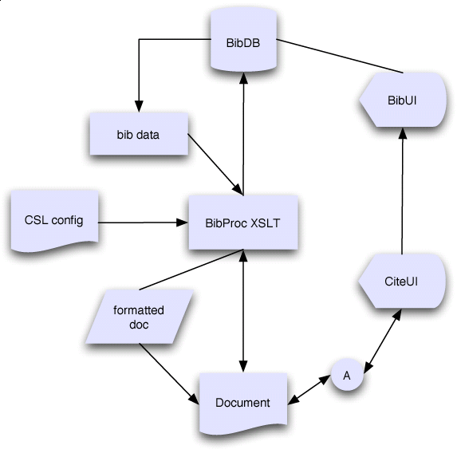

XBiblio provides a schema to specify citation style. Analogous to bibtex .bst files, the XML Bibliographic Style Schema is much easier to use, and is also influenced by innovations in general styling languages such as CSS, as well the recursive structure of bibliographic data.
XBiblio consists of two components. First, and most important, is an XML citation style language, called the Citation Style Language (CSL) schema. The style files are analogous to bibtex .bst file or the binary style files in commercial reference management products, but easier to use, more powerful, and fully open.
| 
Image 1 Process Overview |
| 
Image 2. Detailed Process Overview |
In addition, the project contains a first implementation of a formatting engine using CSL, written in XSLT 2.0. These stylesheets are designed to format DocBook NG records that use bibliographic records defined against the Meta Object Description Schema (MODS) from the Library of Congress. While these are the initial targets, the stylesheets are designed in such a way that I hope to see support for the following input formats:
Using Saxon 8, run like so from the samples directory to generate the sample file:
java net.sf.saxon.Transform -o test.html test.xml
../xsl/xhtml/dbng.xsl citation-style=author-year
The commandline parameter argument at the end is required, and specifies the name (minus the extension) of the citation style file to use.
An example implementation written in XSLT 2.0, which formats documents encoded in the new DocBook NG prototype schema, using bibliographic data encoded with the Meta Object Description Schema (MODS) from the Library of Congress.
http://www.users.muohio.edu/darcusb/files/xbiblio.tar.gz
See http://xbiblio.sourceforge.net/index.html and Bruce's Blog at http://netapps.muohio.edu/blogs/darcusb/darcusb/archives/category/citations/